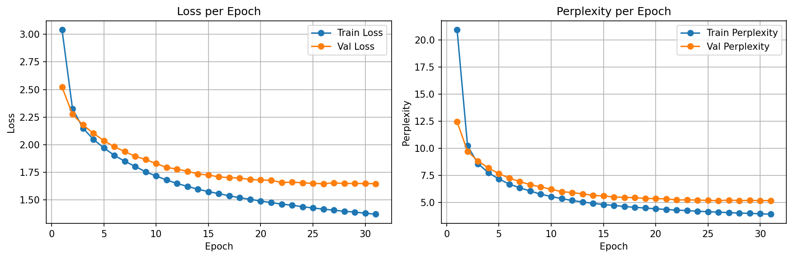
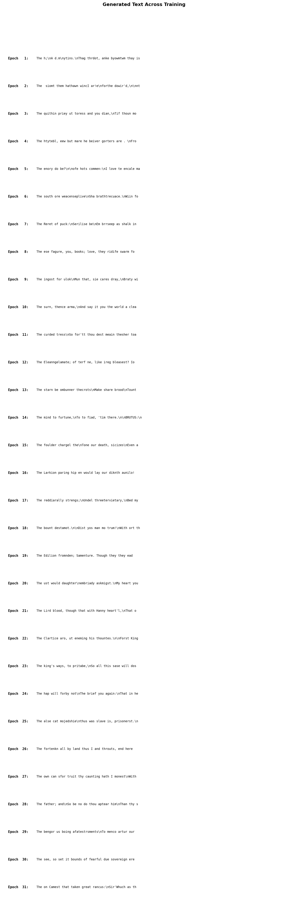

Character-level text generation with a vanilla RNN. The model reads Shakespeare one character at a time, learns patterns, and generates new "Shakespeare-like" text. The first step from spatial (CNN) to sequential (RNN) data.
CNNs see entire images at once (spatial). RNNs process data one step at a time (sequential), maintaining a hidden state as "memory" of what came before. This project makes that shift concrete: instead of classifying images, the model generates text character by character.
Gradient clipping (max_norm=5.0) applied to prevent exploding gradients during BPTT over 100 timesteps
Perplexity = eloss. It answers: "how many characters is the model choosing between?" Lower is better.


Temperature scales the logits before softmax: softmax(logits / T). Lower T = more confident (repetitive). Higher T = more random (creative but messy).
| Parameter | Value | Why |
|---|---|---|
| Sequence Length | 100 characters | Context window for BPTT; longer = more context but harder gradients |
| Hidden Size | 512 | Capacity to encode character patterns and short phrases |
| Optimizer | Adam (lr=0.001) | Standard choice; works well with gradient clipping |
| Gradient Clipping | max_norm=5.0 | Essential for RNNs — prevents exploding gradients in BPTT |
| Batch Size | 64 | Balance of throughput and gradient quality |
| Early Stopping | patience=5 | Stopped at epoch 31 of 50 |
| Data Split | 80/10/10 character-level | Contiguous text blocks, not shuffled sentences |
A CNN sees the entire input at once (an image is a fixed grid). An RNN processes input one step at a time, maintaining a hidden state that gets updated at each step. This hidden state is the network's "memory" — it encodes everything the model has seen so far in the sequence.
At each timestep t, the RNN takes two inputs: the current input xt and the previous hidden state ht-1. It produces a new hidden state ht and optionally an output. The same weights are shared across all timesteps (weight sharing).
Imagine reading a sentence word by word. After each word, you update your mental model of what the sentence means (hidden state). When you reach "The cat sat on the ___", your mental model (hidden state) has accumulated enough context to predict "mat." An RNN works the same way, except it reads character by character.
Key difference from feedforward networks: The W_hh matrix creates a loop — each timestep's hidden state depends on the previous one. This is what makes the network "recurrent" and gives it memory.
Text is inherently sequential — the meaning of a character depends on what came before. RNNs are the natural architecture for sequence tasks. Our model reads Shakespeare character by character, building up context in its hidden state to predict what comes next.
The hidden state is a fixed-size vector (512 dimensions in our model) that gets updated at every timestep. It's the RNN's attempt to compress all past information into a single vector. The quality of this compression determines how well the model can predict the next character.
Imagine watching a movie but you can only keep notes on a single Post-it note (fixed-size vector). After each scene, you must update your note to reflect everything important that's happened so far. Early scenes are easy to summarize, but as the movie progresses, you're forced to overwrite older details. This "Post-it note" is the hidden state — and its limited size is why vanilla RNNs struggle with long sequences.
Our hidden state of size 512 encodes context from up to 100 characters back. After seeing "ROMEO:", the hidden state has learned that a character name followed by a colon means dialogue is about to start. But for longer dependencies (who's speaking 3 lines ago?), the hidden state "forgets" — motivating LSTMs.
To train an RNN, you "unroll" the loop: imagine copying the RNN once per timestep and connecting them in a chain. Now it looks like a very deep feedforward network (100 layers for 100 timesteps) and you can apply standard backpropagation. The catch: gradients must flow backwards through all 100 copies, and they multiply by the W_hh matrix at each step.
Imagine playing a game of telephone with 100 people. The original message (gradient) starts at the end and passes backwards through each person. By the time it reaches person #1, the message is either amplified to screaming (exploding gradients) or faded to a whisper (vanishing gradients). BPTT has the same problem — information degrades over long chains.
Our sequence length of 100 means BPTT unrolls 100 steps. This directly causes the exploding gradient problem (requiring gradient clipping) and the vanishing gradient problem (limiting how far back the model can "learn from"). Both are experienced firsthand in this project.
Exploding gradients: When the W_hh eigenvalues > 1, gradients grow exponentially through timesteps. Training loss spikes to NaN or infinity. Solution: gradient clipping.
Vanishing gradients: When eigenvalues < 1, gradients shrink exponentially. Weights for early timesteps barely update — the model effectively can't learn long-range dependencies. Solution: LSTMs/GRUs (gated architectures with explicit memory).
Exploding: Imagine a microphone pointed at its own speaker (feedback loop). The sound gets louder and louder until it's ear-splitting. Gradient clipping is like putting a volume limiter on the speaker.
Vanishing: Imagine whispering a message through 100 rooms. By room 50, nobody can hear it anymore. This is why our model can spell short words but can't maintain coherent sentences — the "message" from 50 characters ago has faded to nothing.
We use gradient clipping (max_norm=5.0) to handle exploding gradients. Without it, training diverges within a few epochs. The vanishing gradient problem is visible in our outputs: the model nails short patterns (formatting, short words) but can't maintain coherence over long spans. This is the direct motivation for the next project (LSTM).
One-hot encoding converts a categorical value (like a character) into a vector where one element is 1 and all others are 0. For 65 unique characters, each becomes a 65-dimensional sparse vector. No similarity is encoded — 'a' is as "far" from 'b' as it is from 'z'.
Imagine 65 light switches on a wall, one per character. To represent 'A', you flip switch #1 on and leave everything else off. To represent 'B', you flip only switch #2. This is simple and unambiguous, but it tells the model nothing about relationships between characters (like vowels being similar to each other).
Limitation: One-hot is intentionally naive. In practice, embeddings (learned dense vectors, e.g., 32-dim instead of 65-dim) are used. Embeddings let the model learn that 'a' and 'e' are both vowels, or that 'R' and 'r' represent similar sounds. We used one-hot here for educational clarity.
We chose one-hot to keep the focus on understanding the RNN itself, not the input representation. The 65-dim input feeds directly into nn.RNN(65, 512). In the LSTM project, we'll switch to embeddings — understanding why one-hot is limited makes the motivation for embeddings clear.
Before converting logits to probabilities via softmax, divide them by a temperature value T. Low T (<1) makes the distribution sharper (confident, repetitive). High T (>1) makes it flatter (random, creative). T=1 is the default (unchanged distribution).
Imagine a music DJ with a popularity dial. At T=0.5, they only play the top 3 hits on repeat (safe, boring). At T=1.0, they mix popular songs with some deeper cuts (balanced). At T=1.5, they play random tracks from their entire library including obscure B-sides (exciting but chaotic). Temperature controls how "adventurous" the model's choices are.
Implementation is literally one line: probs = softmax(logits / temperature). This same technique is used in GPT, Claude, and every modern language model.
We generated Shakespeare at T=0.5, 1.0, and 1.5 to see the full spectrum. T=0.5 produces real-looking character names and dialogue structure. T=1.5 produces creative gibberish. Understanding this tradeoff is essential for anyone working with generative models.
Perplexity = ecross-entropy loss. It converts an abstract loss number into an intuitive question: "how many options is the model effectively choosing between?" A perplexity of 6.33 means "on average, the model narrows the next character down to about 6 candidates."
Imagine playing 20 Questions. If you can always narrow it down to 6 options, you're doing well (perplexity = 6). If you're stuck choosing between all 65 characters equally, you're clueless (perplexity = 65, random baseline). If you always know the answer with 100% certainty, perplexity = 1 (perfect).
This is a generation task, not classification — there's no "accuracy" to report. Perplexity is the standard metric for language models. Our model went from perplexity 65 (random) to 6.33 (choosing between ~6 characters), which is the most interpretable way to describe its performance.
Character-level: Vocabulary is tiny (65 chars). The model must learn spelling, word boundaries, grammar, and meaning — all from individual characters. Flexible (can generate any word) but struggles with long-range patterns.
Word-level: Vocabulary is large (10K-50K words). Spelling is "free" but rare words become unknown tokens. Each timestep covers more meaning per step.
Character-level is like teaching a child to write by first learning individual letters, then combining them into words, then sentences. Very flexible — they can spell any word — but it takes a long time to learn meaningful composition.
Word-level is like using flashcards with whole words. You learn faster but you're limited to the words on your cards. Unknown words are a blank stare.
We chose character-level because (1) the vocabulary is tiny and manageable for a first RNN, (2) it forces us to see exactly what the RNN learns at each level (characters → words → formatting → phrases), and (3) it makes the limitations visible — the model struggles with long words precisely because character-level is harder.
logits / temperature before softmax is the entire implementation. T=0.5 sharpens the distribution (safe, repetitive), T=1.5 flattens it (creative, chaotic). This same technique is used in GPT and every modern language model.ShakespeareDataset with just __len__ and __getitem__ was simple. DataLoader doesn't care about content format — it just needs to know how many samples exist and how to fetch one.| Project | Domain | Key Metric | Architecture Highlight |
|---|---|---|---|
| 1. MNIST CNN | Image Classification | 99.35% acc | Conv + Pool + FC basics |
| 2. CIFAR-10 CNN | Image Classification | 81.04% acc | BatchNorm, LR Scheduler, scratch ceiling |
| 3. Transfer Learning | Image Classification | 96.60% acc | ResNet18, freeze/unfreeze, fine-tuning |
| 4. RNN Shakespeare | Text Generation | 6.33 perplexity | Sequential processing, hidden state, BPTT |
From spatial to sequential. From classification to generation. Each project builds on the limitations of the last.
The vanilla RNN's biggest weakness — vanishing gradients killing long-range memory — is exactly what LSTMs solve. The next project uses LSTM cells with gates (forget, input, output) that control information flow, enabling the model to remember across much longer sequences.